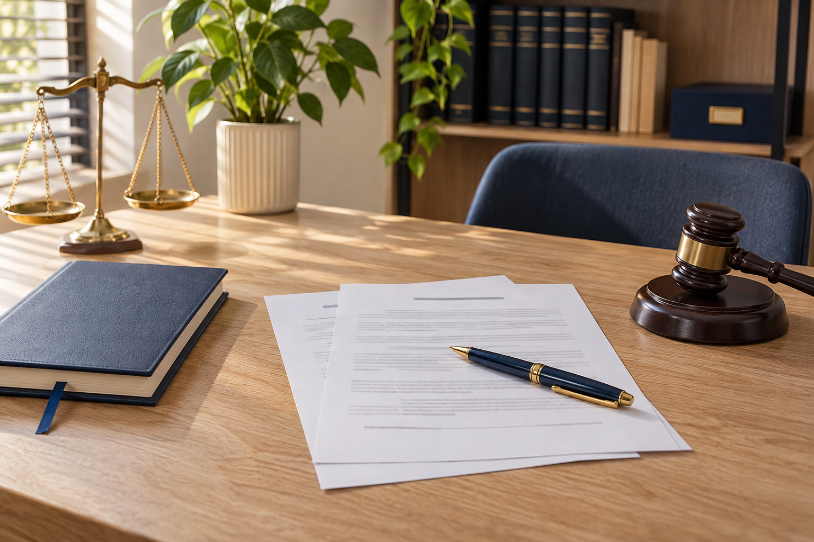
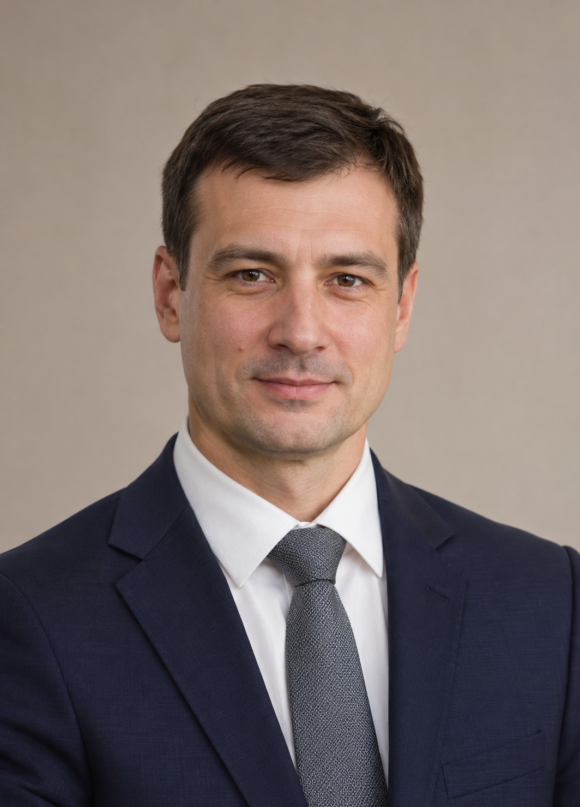

Гражданские дела
Договорные и имущественные споры, наследственные и семейные вопросы. Подготовка претензий, исков и процессуальных документов.
Подробнее о направленииГражданские и уголовные дела
Консультации, подготовка документов и представительство. Для каждого дела определяем правовую задачу, собираем документы и выбираем порядок действий.
Направления работы
Договорные и имущественные споры, наследственные и семейные вопросы. Подготовка претензий, исков и процессуальных документов.
Подробнее о направленииЗащита на стадии предварительного расследования и в суде. Представление интересов потерпевших, подготовка жалоб и ходатайств.
Подробнее о направлении

Учебный проект. Сотрудники, изображения людей, контакты и статистика вымышлены. Сайт не представляет действующее адвокатское бюро.